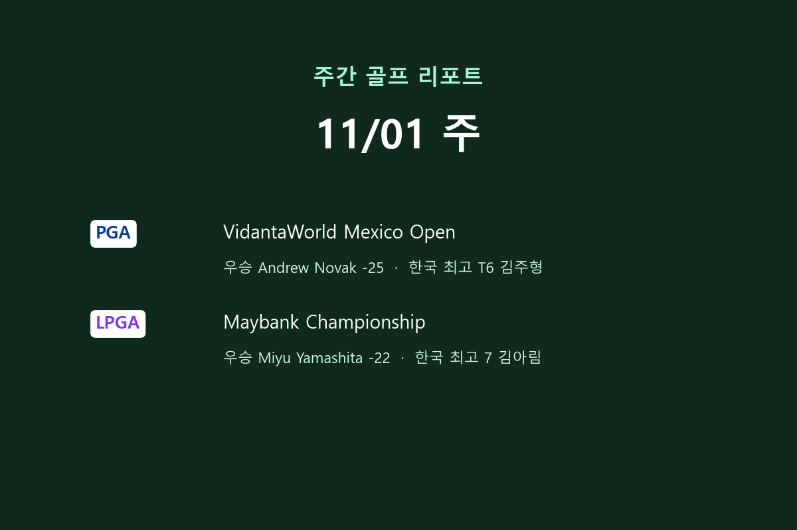

노백 멕시코 오픈 5타 차 우승, 야마시타 메이뱅크 2연패
2026년 11월 1일 끝난 주에는 PGA 투어와 LPGA 투어가 각각 멕시코와 말레이시아에서 대회를 치렀습니다. PGA 투어 VidantaWorld 멕시코 오픈에서는 앤드루 노백(Andrew Novak)이 2위와 5타 차로 정상에 올랐고, LPGA 투어 메이뱅크 챔피언십에서는 지난해 우승자 야마시타 미유(Miyu Yamashita)가 다시 우승했습니다. 한국 선수로는 김주형이 공동 6위, 김아림이 7위로 두 대회 모두 상위 10위 안에 이름을 올렸습니다.
PGA 투어 · 멕시코 오픈: 앤드루 노백 25언더파 우승, 김주형 공동 6위
⛳ VidantaWorld Mexico Open — 2026-10-29~11-01 · Vidanta Vallarta · 파 71 · 총상금 $6,000,000

VidantaWorld 멕시코 오픈은 10월 29일부터 11월 1일까지 멕시코 Vidanta Vallarta(파71)에서 총상금 600만 달러 규모로 열렸습니다. 앤드루 노백이 최종 합계 25언더파로 우승해 상금 108만 달러를 받았습니다. <mark>노백은 공동 2위 크리스토퍼 벤투라(Kristoffer Ventura)와 스티븐 피스크(Steven Fisk)를 5타 차로 따돌렸습니다.</mark> 매켄지 휴스(Mackenzie Hughes)와 벤 그리핀(Ben Griffin)이 19언더파 공동 4위, 지난해 우승자 브라이언 캠벨(Brian Campbell)은 18언더파 공동 6위로 마쳤습니다.

승부는 대회 중반에 사실상 갈렸습니다. 노백은 1라운드 67타 뒤 2라운드 61타(10언더파), 3라운드 62타(9언더파)를 이어 쳐 54홀까지 23언더파를 기록했고, 상위 10명 가운데 3라운드 기준 두 번째로 좋은 더그 김(Doug Ghim, 16언더파)보다 7타 앞서 있었습니다. 마지막 날에는 69타로 2타를 더 줄이며 리드를 지켰습니다. 반면 벤투라와 피스크는 최종 라운드에 나란히 63타(8언더파)를 쳐 공동 2위까지 올라섰는데, 이번 대회 마지막 날 상위권에서 가장 좋은 스코어였습니다.
한국 선수 성적
| 순위 | 선수 | 합계 | 1R | 2R | 3R | 4R | 상금 |
|---|---|---|---|---|---|---|---|
| T6 | 김주형 | -18 | 67 | 68 | 65 | 66 | $189,300 |
김주형은 합계 18언더파(67-68-65-66)로 공동 6위에 올라 상금 18만 9,300달러를 받았습니다. 2라운드까지 6언더파였던 그는 3라운드 65타, 4라운드 66타로 주말 이틀 동안 11타를 줄이며 순위를 끌어올렸습니다. <mark>주말 두 라운드에서만 11타를 줄인 뒷심이 상위 10위 진입으로 이어졌습니다.</mark> 공교롭게도 지난해 우승자 브라이언 캠벨과 라운드별 타수가 67-68-65-66으로 똑같았습니다.
전체 순위: VidantaWorld Mexico Open 리더보드
LPGA 투어 · 메이뱅크 챔피언십: 야마시타 미유 2연패, 김아림 7위·최혜진·양희영 공동 9위
⛳ Maybank Championship — 2026-10-29~11-01 · Kuala Lumpur Golf and Country Club (West Course) · 파 72 · 총상금 $3,000,000

메이뱅크 챔피언십은 10월 29일부터 11월 1일까지 말레이시아 Kuala Lumpur Golf and Country Club 웨스트 코스(파72)에서 총상금 300만 달러로 열렸습니다. <mark>지난해 이 대회 우승자인 야마시타 미유가 22언더파로 다시 정상에 오르며 타이틀을 지켰습니다.</mark> 우승 상금은 45만 달러입니다. 중국의 류옌(Yan Liu)이 20언더파 단독 2위, 마리사 토자이(Marisa Tojai)와 폴린 루생부샤르(Pauline Roussin-Bouchard)가 19언더파 공동 3위였습니다.

야마시타는 65-66-67-68타로 네 라운드 모두 60대 타수를 적어내며 꾸준히 타수를 줄였습니다. 3라운드까지 18언더파로, 상위 10명 가운데 그다음인 류옌과 루생부샤르(각 16언더파)에 2타 앞서 있었습니다. 류옌은 3라운드에 63타(9언더파)를 치며 추격했지만 마지막 날 68타에 그쳐 격차를 좁히지 못했습니다. 토자이는 첫날 72타로 출발했으나 이후 65-65-67타를 이어 공동 3위까지 올라왔습니다.
한국 선수 성적
| 순위 | 선수 | 합계 | 1R | 2R | 3R | 4R | 상금 |
|---|---|---|---|---|---|---|---|
| 7 | 김아림 | -15 | 70 | 64 | 71 | 68 | $101,895 |
| T9 | 최혜진 | -13 | 67 | 70 | 70 | 68 | $51,846 |
| T9 | 양희영 | -13 | 68 | 67 | 71 | 69 | $51,846 |
| 20 | 황유민 | -12 | 67 | 70 | 73 | 66 | $35,928 |
| T21 | Minji Kang | -11 | 68 | 72 | 65 | 72 | $33,512 |
| T35 | 주수빈 | -7 | 70 | 68 | 68 | 75 | $17,159 |
| T44 | 고진영 | -6 | 69 | 73 | 71 | 69 | $13,095 |
| T48 | 안나린 | -5 | 71 | 70 | 68 | 74 | $11,050 |
| T53 | 임진희 | -4 | 73 | 68 | 70 | 73 | $9,812 |
| T69 | 이미향 | +3 | 69 | 78 | 74 | 70 | $6,189 |
| - | 유해란 | E |
한국 선수는 세 명이 상위 10위 안에 들었습니다. 김아림이 합계 15언더파(70-64-71-68)로 7위에 올라 상금 10만 1,895달러를 받았고, 2라운드 64타(8언더파)가 순위를 끌어올린 라운드였습니다. 최혜진(67-70-70-68)과 양희영(68-67-71-69)은 나란히 13언더파 공동 9위로 각각 5만 1,846달러를 받았습니다. <mark>김아림·최혜진·양희영 세 선수가 톱10에 이름을 올렸습니다.</mark>
황유민은 3라운드 73타로 주춤했지만 마지막 날 66타를 쳐 12언더파 20위로 마쳤고, Minji Kang은 11언더파 공동 21위였습니다. 이어 주수빈 공동 35위(-7), 고진영 공동 44위(-6), 안나린 공동 48위(-5), 임진희 공동 53위(-4), 이미향 공동 69위(+3)로 대회를 마쳤습니다. 유해란은 기권했습니다.
전체 순위: Maybank Championship 리더보드
이번 주는 PGA 투어에서 큰 격차의 우승이, LPGA 투어에서는 지난해 우승자의 2연패가 나왔습니다. 다음 주 대회 결과도 같은 방식으로 정리해 전해 드리겠습니다.
※ 순위·스코어는 ESPN 공개 리더보드와 KLPGA 공식 리더보드 기준이며, 그래프와 표는 이 기록으로 직접 만들었습니다. 영상은 각 투어 공식 유튜브 채널의 퍼가기입니다.